Random Effects

The Problem of Independence

- Let’s say you are sampling juvenile mussel
lengths
- You sample at 10 sites around each island
- Can you just take the mean of all sites?
- Is it OK to pull out an “Island” effect?
How would you handle measuring the same subjects in an experiment over time?

What is the Sample Size?

What is the Sample Size?

Pseudoreplication

Hurlbert 1985
What is the problem with Pseudoreplication?
\[Y_i = \beta X_i +
\epsilon_i\]
\[\epsilon_i \sim \mathcal{N}(0, \sigma^2)\]
This assumes that all replicates are independent and
identically distributed
How to deal with violation of Independence
- Average at group level
- Big hit to sample size/power
- Fixed effect of group
- Big hit to DF
- Many parameters to estimate = higher coef SE
- Model hierarchy explicitly with Random
effects
- Mixed models if fixed and random effects
- Models correlation within groups
- Creates correct error structure
- Loses fewer DF
What is a random effect?
Let’s Say You’re Sampling Mussel Lengths…
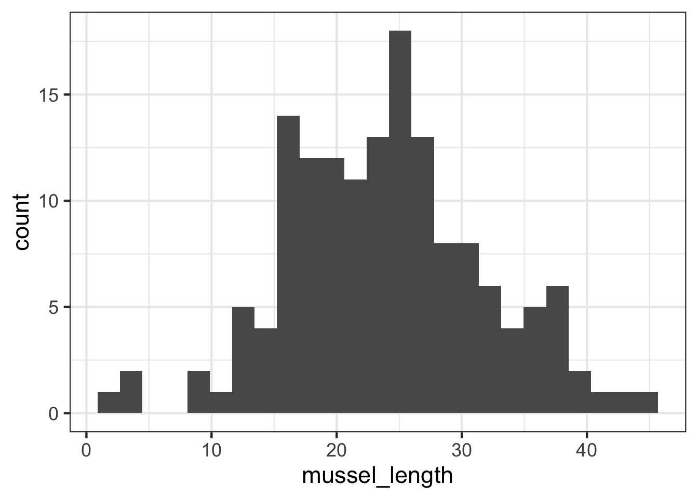
But, They come from different islands…
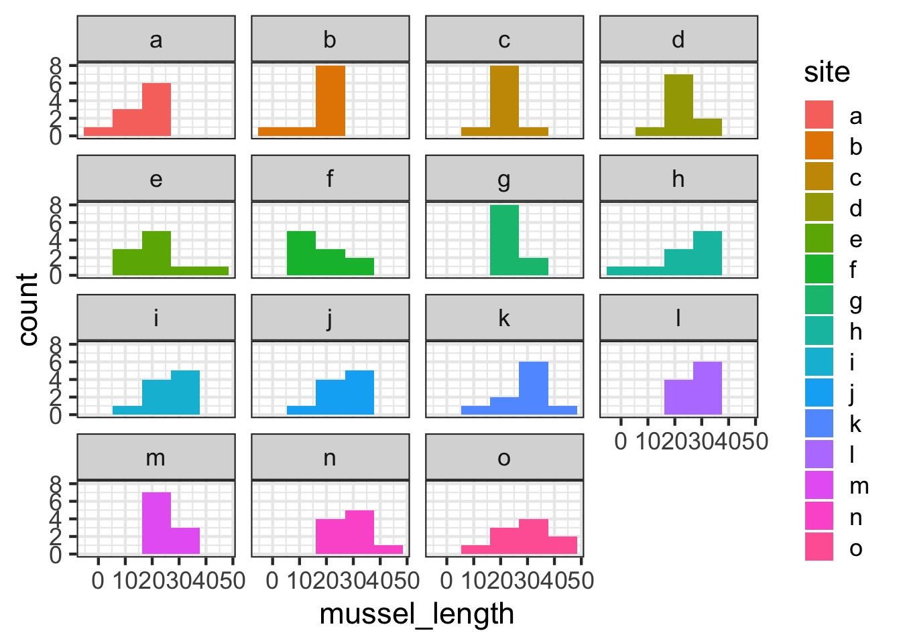
Are different islands that different?
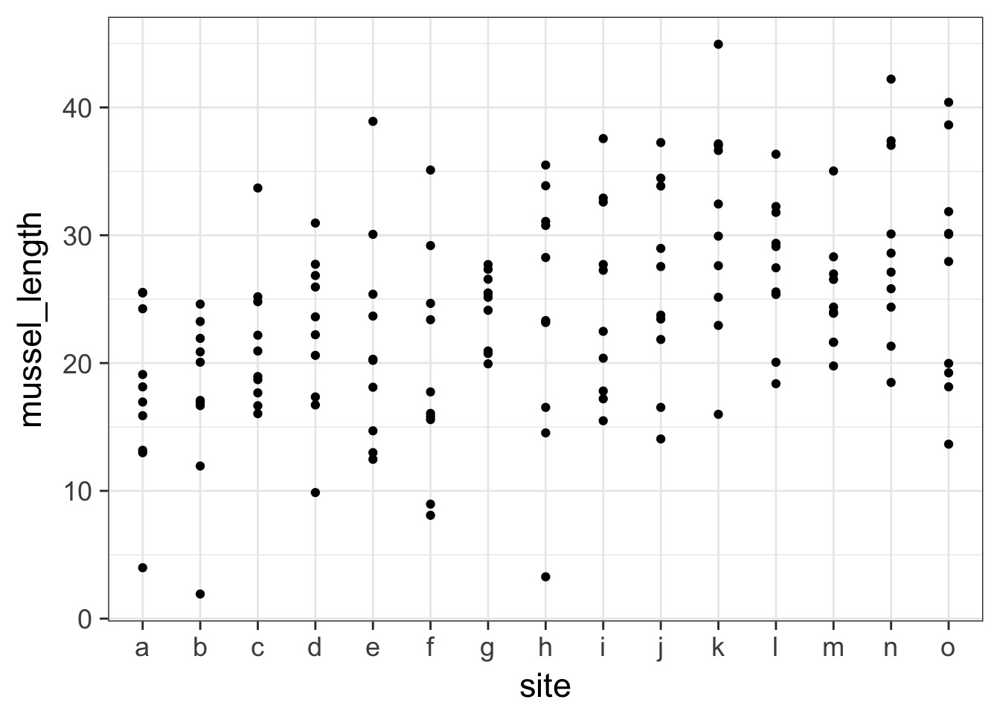
Are different islands that different?
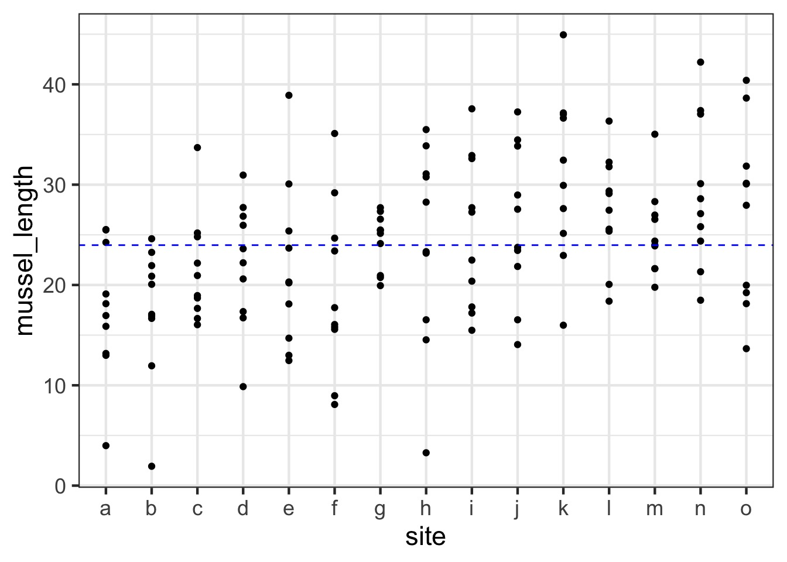
The Problem with Pseudoreplication - Confidence Intervals

The Problem with Pseudoreplication - Unbalanced Samples and Bias
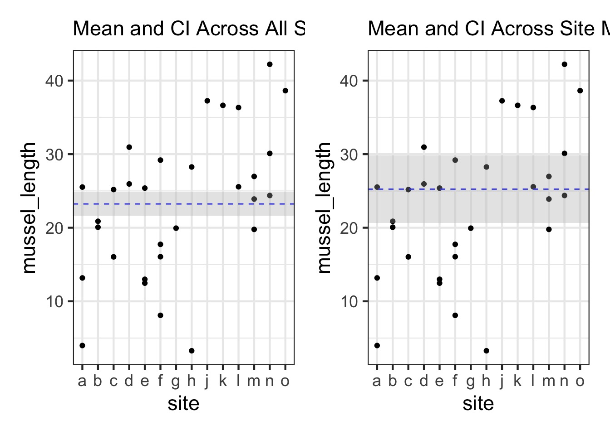
Are different islands that different?
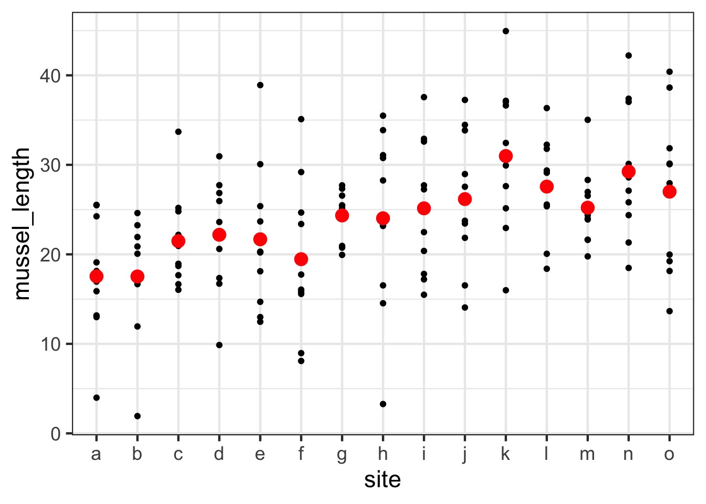
You Could Try a Fixed Effects Model…
\[Y_{ij} = \beta_{j} + \epsilon_i\]
\[\epsilon_i \sim \mathcal{N}(0, \sigma^2)\]
What is the distribution of site means?
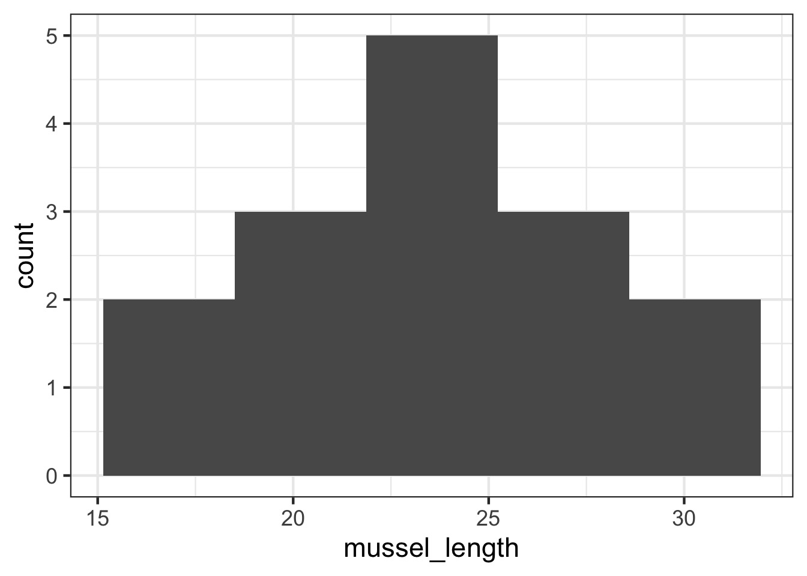
Random Effects
- A random effect is a parameter that varies across groups
following a distribution
- Implies that, while there is a grand mean fixed effect
(slope or intercept), each group deviates randomly
- Implies that there is no one true value of a parameter in
the world
- Allows us to estimate variability in how effects
manifest
- We pull apart variance components driving our response
Fixed Versus Random Effects Model
Fixed:\[Y_{ij} = \beta_{j} + \epsilon_i\]
\[\epsilon_i \sim \mathcal{N}(0, \sigma^2)\]
Random:
\[Y_{ij} = \beta_{j} +
\epsilon_i\]
\[\beta_{j} \sim \mathcal{N}(\beta,
\sigma^2_{site})\]
\[\epsilon_i \sim \mathcal{N}(0,
\sigma^2)\]
Consider what random effects mean - 1 model, 2 ways
\[Y_{ij} = \beta_{j} + \epsilon_i\]\[\beta_{j} \sim \mathcal{N}(\alpha, \sigma^2_{site})\]
\[\epsilon_i \sim \mathcal{N}(0, \sigma^2)\]
\[Y_{ij} = \alpha + \beta_{j} +
\epsilon_i\]
\[\beta_{j} \sim \mathcal{N}(0,
\sigma^2_{site})\]
\[\epsilon_i \sim \mathcal{N}(0,
\sigma^2)\]
Consider what random effects mean - GLMM Notation
(yes, Generalized Linear Mixed Models - we will get there)
\[\large \eta_{ij} = \alpha +
\beta_{j}\]
\[\ \beta_{j} \sim \mathcal{N}(0,
\sigma^2_{site})\]
\[\large f(\widehat{Y_{ij}}) =
\eta_{ij}\]
\[\large Y_{ij} \sim \mathcal{D}(\widehat{Y_{ij}}, \theta)\] where D is a distribution in the exponential family
Fixed Versus Random Effects Model Visually
Wait, but what about good old blocks and fixed effects?
- We used to model blocks via estimation of
means/parameters within a block
- But - there was no distribution of parameters
assumed
- Assumed blocks could take any value
- Is this biologically plausible?
- What are blocks but collections of nuissance parameters?
The Shrinkage Factor!
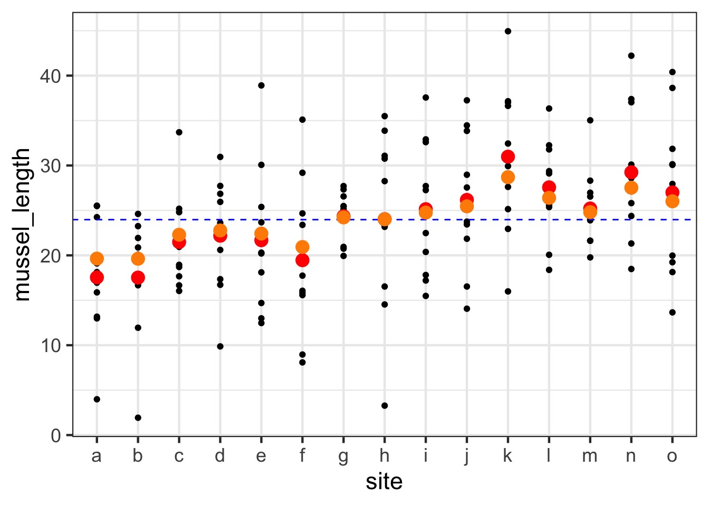
Orange = random effects estimates, Red = fixed effects estimate
Shrinkage
- Random effects assume each observation is drawn from a grand
mean
- This we can draw strength from samples in other
groups to estimate a group mean
- It reduces variance between groups by biasing
results towards grand mean
- Philosophically, group means are always likely to be incorrect due to sampling
Shrunken Group Mean - Note influence of sample size
\[\hat{Y_j} = \rho_j\bar{y_j} + (1-\rho_j)\bar{y}\]where \(\rho_j\) is the shrinkage coefficient
\[\rho_j = \frac{\tau^2}{\tau^2 +
\frac{\sigma^2}{n_j}}\]
Where \(\tau^2\) is the variance of the
random effect, and \(n_j\) is the group
sample size
For example, unbalanced sample sizes
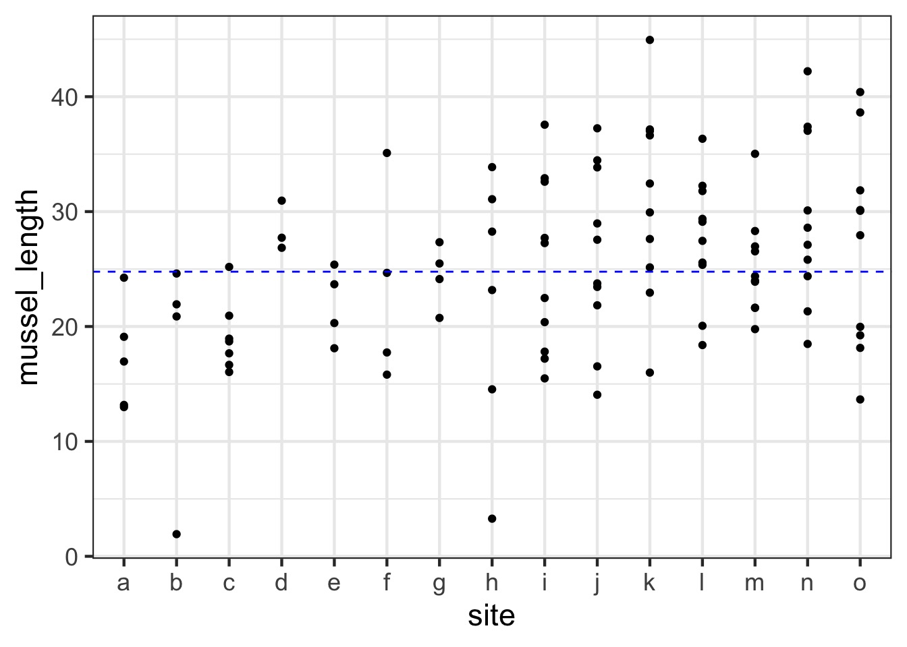
For example, unbalanced sample sizes
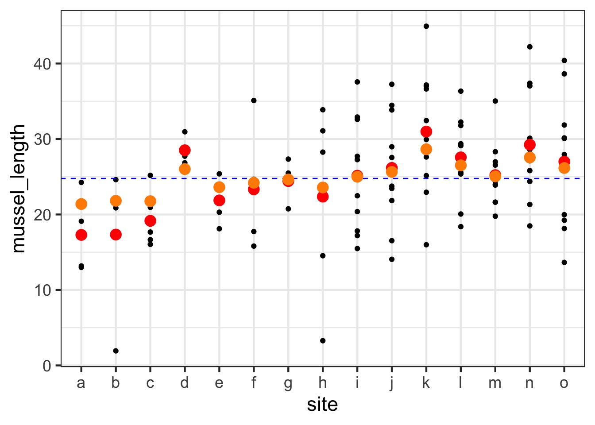
It effects more than means - Confidence!
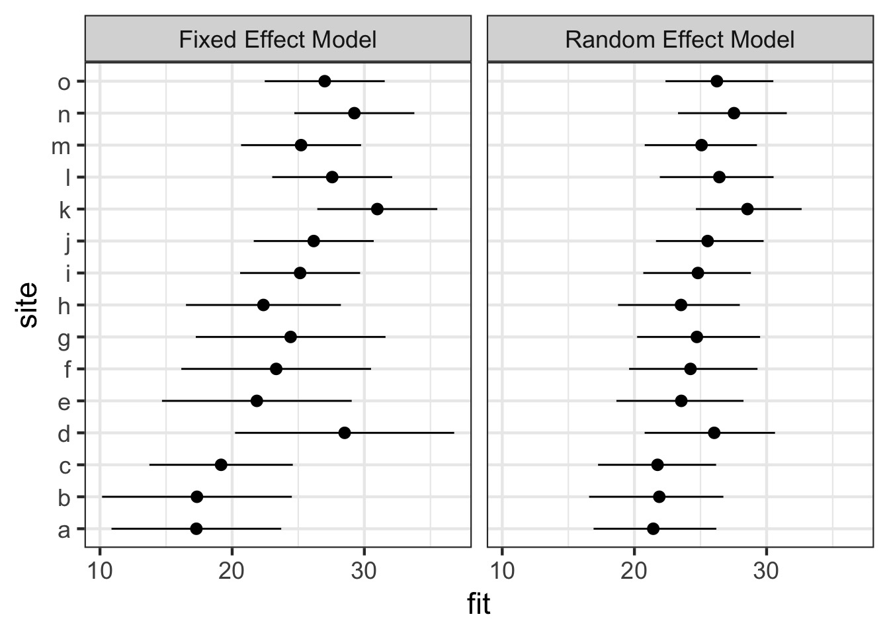
Fixed versus Random Effects
Fixed Effect: Effects that are constant across
populations.
Random Effect: Effects that vary are random outcomes of
underlying processes.
Gelman and Hill (2007) see the distinction as artificial. Fixed
effects are special cases of random effects where the variance is
infinite. The model is what you should focus on.
You will also hear that ’random effects’ are effects with many levels, but that you have not sampled all of them, wheras with fixed effects, you have sampled across the entire range of variation. This is subtly different, and artificial.
BUT - The big assumption
The Random Effect is Uncorrelated with Any Fixed Effects
Violating this is a violation of the assumption of endogeneity (aka the
Random Effects assumption)
A Visual Explanation of Endogeneity Problems: Fixed Effects
A Visual Explanation of Endogeneity Problems: Random Effects
Fixed versus Random Effects Revisited
- If your groups are correlated with predictors, use
fixed effects
- See also upcoming lecture
- See also upcoming lecture
- If your groups are not “exchangeable”, use fixed
effects
- Fixed effects aren’t bad, they’re
just inefficient
- However, fixed effects are harder to generalize from
More on when to avoid random effects: estimation concerns
- Do you have <4 blocks?
Fixed
- Do you have <3 points per block?
Fixed
- Is your ‘blocking’ variable continuous?
Fixed
- But slope can vary by discrete blocks - wait for
it!
- But slope can vary by discrete blocks - wait for
it!
- Do you have lots of blocks, but few/variable points
per block? Random
- Save DF as you only estimate \(\sigma^2\)
- Save DF as you only estimate \(\sigma^2\)
Other Ways to Avoid Random Effects
- Are you not interested in within subjects
variability?
- AVERAGE at the block level
- But, loss of power
- Is block level correlation simple?
- GLS with compound symmetry varying by block
-corCompSym(form = ~ 1|block)
- OH, JUST EMBRACE THE RANDOM!
Estimating Random Effects
Restricted Maximum Likelihood
- We typically estimate a \(\sigma^2\) of random effects, not the
effect of each block
- But later can derive Best Least Unbiased Predictors of each block (BLUPs)
- ML estimation can underestimate random effects variation (\(\sigma^2_{block}\))
- REML seeks to decompose out fixed effects to estimate random
effects
- Works iteratively - estimates random effects, then fixed, then back,
and converges
- Lots of algorithms, computationally expensive
What other methods are available to fit GLMMs?
(adapted from Bolker et al TREE 2009 and https://bbolker.github.io/mixedmodels-misc/glmmFAQ.html)
| Method | Advantages | Disadvantages | Packages |
|---|---|---|---|
| Penalized quasi-likelihood | Flexible, widely implemented | Likelihood inference may be inappropriate; biased for large variance or small means | glmmPQL (R:MASS), ASREML-R |
| Laplace approximation | More accurate than PQL | Slower and less flexible than PQL | glmer (R:lme4), glmm.admb (R:glmmADMB), INLA, glmmTMB |
| Gauss-Hermite quadrature | More accurate than Laplace | Slower than Laplace; limited to 2‑3 random effects | glmer (R:lme4, lme4a), glmmML (R:glmmML) |
In R….

THE ONE SOURCE
NLME and LMER
nlmewas created by Pinhero and Bates for linear and nonlinear mixed models
- Also fitsglsmodels with REML
- Enables very flexible correlation structures
- Uses Satterthwaite corrected DF
lme4started by Bates, many developers
- Much faster for complex models
- Can fit generalized linear mixed models
- Simpler syntax adapted by many other packages
- Does not allow you to model correlation structure
- Does not allow you to model variance structure
Other R packages (functions) fit GLMMs?
- MASS::glmmPQL (penalized quasi-likelihood)
- lme4::glmer (Laplace approximation and adaptive Gauss-Hermite quadrature [AGHQ])
- glmmML (AGHQ)
- glmmAK (AGHQ?)
- glmmADMB (Laplace)
- glmmTMB (Laplace)
- glmm (from Jim Lindsey’s
repeatedpackage: AGHQ) - gamlss.mx
- ASREML-R
- sabreR
(from https://bbolker.github.io/mixedmodels-misc/glmmFAQ.html)
Don’t you… Forget about Bayes
rstanarmuseslme4syntax
brmsuseslme4syntax and more
- Once a mixed model gets to sufficient complexity, it’s Bayes, baby!
Fitting a Mixed Model with lme4
1 | group syntax!
Fitting a Mixed Model with nlme
Evaluating…

Evaluating…

Evaluating Groups
$site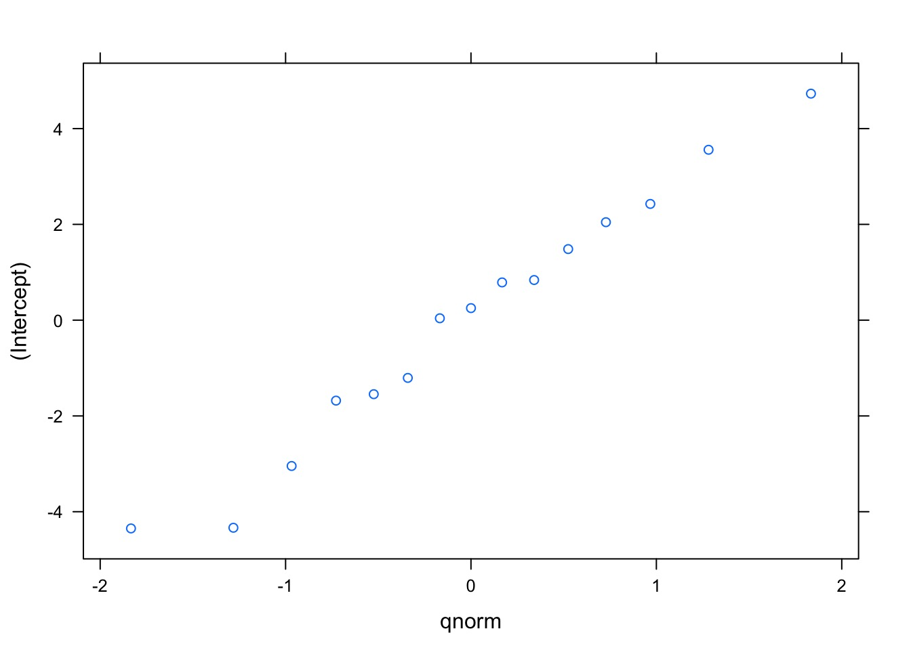
Evaluating Groups
$site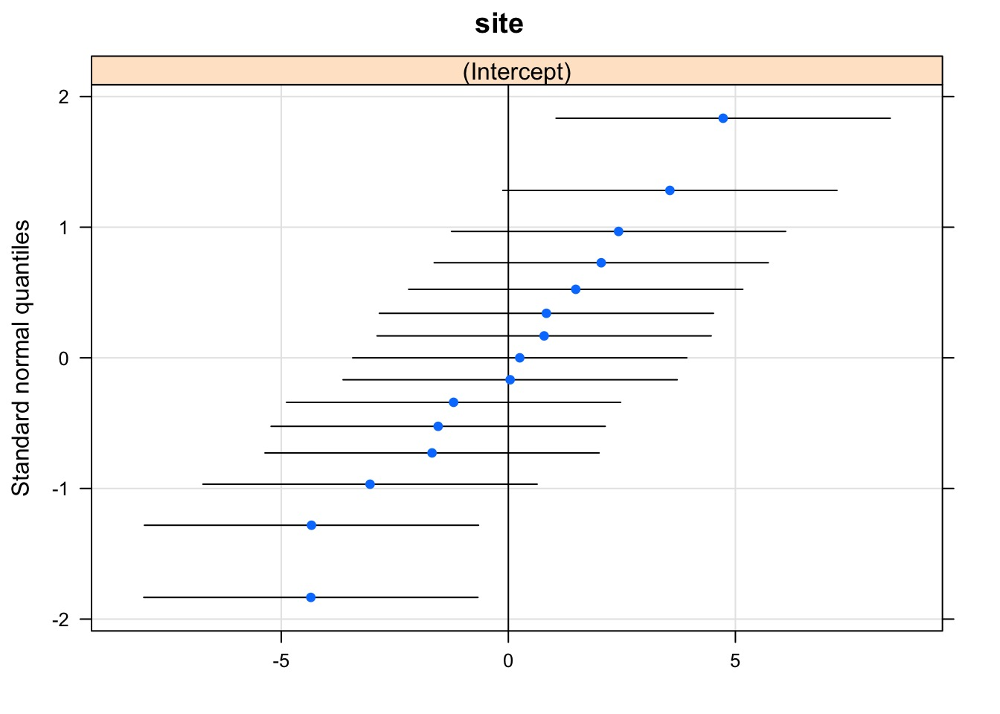
Evaluating…quantile residuals
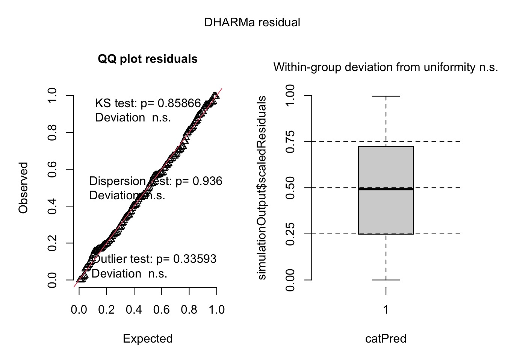
Evaluating Coefficients
| effect | group | term | estimate | std.error | statistic |
|---|---|---|---|---|---|
| fixed | NA | (Intercept) | 23.971873 | 1.034508 | 23.17224 |
| ran_pars | site | sd__(Intercept) | 3.291326 | NA | NA |
| ran_pars | Residual | sd__Observation | 7.225154 | NA | NA |
Why no p-values
- The issue of DF in a mixed model is tricky
- There are many possible solutions to calculating corrected DF
- All depend on assumptions of ‘effective sample size’
- Requires knowing distribution of variability around random
effects
- This is only ‘natural’ in Bayes
- Why not compare to a null model anyway?
- More an issue with mixed models - stay tuned!
Seeing the Fixed Effects
(Intercept)
23.97187 Seeing the Random Effects
$site
(Intercept)
a -4.33497614
b -4.34924331
c -1.68011011
d -1.20584109
e -1.54561002
f -3.04522008
g 0.25130706
h 0.03927292
i 0.78803340
j 1.48409865
k 4.72979281
l 2.42732356
m 0.83801263
n 3.55773499
o 2.04542473
with conditional variances for "site" Combined Effects
$site
(Intercept)
a 19.63690
b 19.62263
c 22.29176
d 22.76603
e 22.42626
f 20.92665
g 24.22318
h 24.01115
i 24.75991
j 25.45597
k 28.70167
l 26.39920
m 24.80989
n 27.52961
o 26.01730
attr(,"class")
[1] "coef.mer"Visualizing
library(merTools)
#make data for coefficients
test_data <- data.frame(site = unique(mussels$site))
#get simulated predictions
coef_df <- predictInterval(mussels_mer, newdata = test_data,
level = 0.95, include.resid.var = FALSE) %>%
cbind(test_data)
#plot
ggplot(coef_df, aes(x = site, y = fit, ymin = lwr, ymax = upr)) +
geom_pointrange() + coord_flip()+
geom_hline(yintercept = 0, color = "red", lty = 2)Visualizing
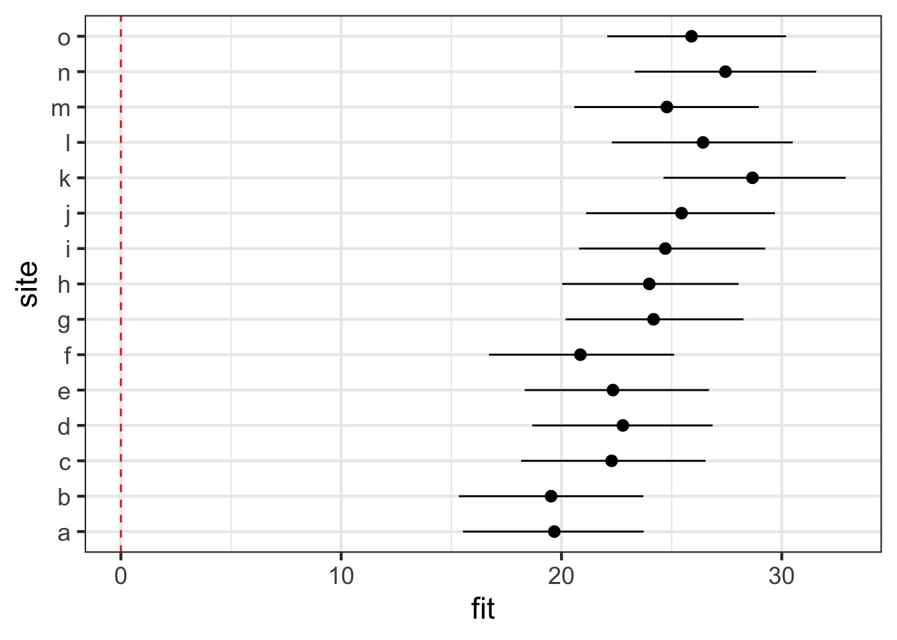
Visualizing Random Effects
ranef_df <- predictInterval(mussels_mer, which = "random",
newdata = test_data,
level = 0.95, include.resid.var = FALSE) %>%
cbind(test_data)
#plot
ggplot(ranef_df, aes(x = site, y = fit, ymin = lwr, ymax = upr)) +
geom_pointrange() + coord_flip() +
geom_hline(yintercept = 0, color = "red", lty = 2)Visualizing Random Effects
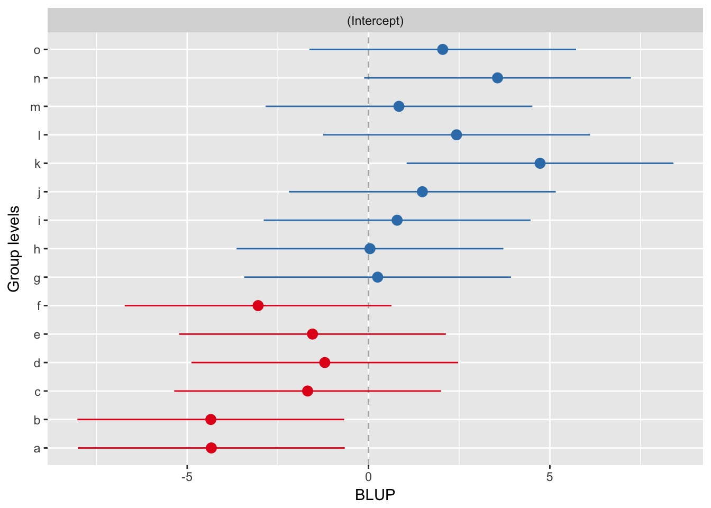
Visualizing Fixed Effects
Visualizing Fixed Effects
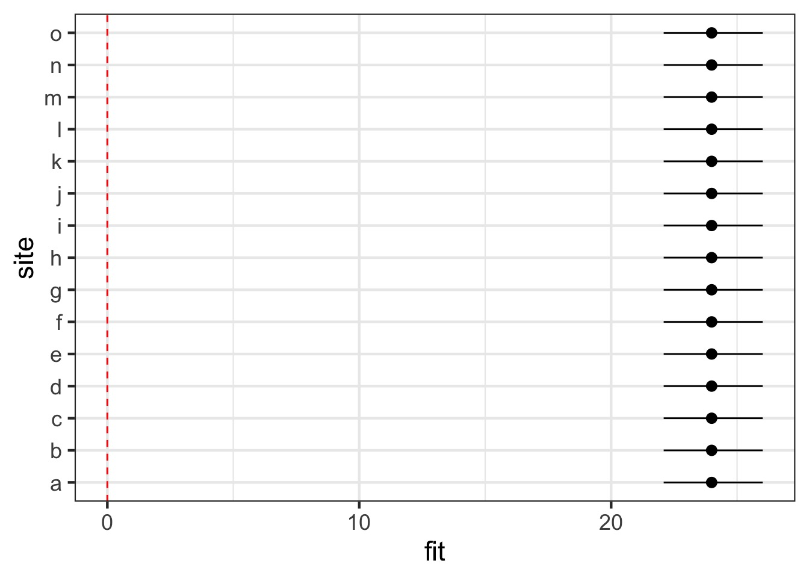
Example
- Look at unequal sample size mussel file
- Analyze using
lm
- Analyze using
lmon site averages
- Analyze using
lmer
- Compare outputs, visualize coefficients
- Bonus, try
glmmTMBand search out needed functions